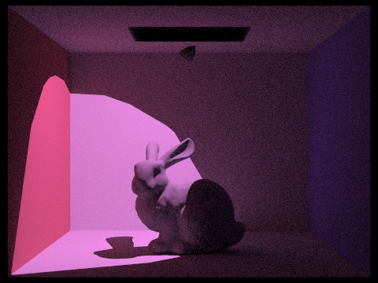
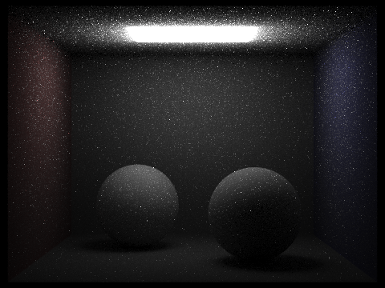
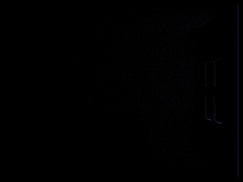
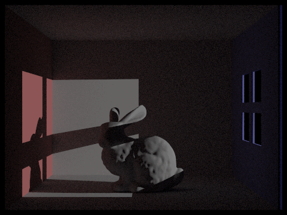

Current Progress
So far, we have tried to implement the basic structure for the ray marching loop to enable the absorption and out-scattering aspects of volumetric lighting. With this enabled, we can render a scene where the environment fades out into darkness, as we are currently subtracting from the luminance. However, it is currently a bit difficult to tell how well our current implementation is working because it is difficult to tell when a black pixel is from absorption or from noise.
We did not follow the original plan, as it took much longer than expected to try to figure out the structure of the ray marching and implementation details, such as termination of the volumetric scattering rays for performance purposes. To update our work plans, taking into account the feedback from our proposal, we will aim to have the ray marching fully completed by August 10th. With most of the concepts fully flushed out and implementation decisions being finalized, we primarily need to focus on coding as much as possible to leave us a couple of days to render and experiment with different scenes.
In the next step, we plan to implement in-scattering, as this is where we will add luminance to a sample as rays travel through the material. Then we will generate results for our deliverable, such as tuning the parameters, adding particle effects, and textured area light.
We also began figuring out how we will set up scenes that will better demonstrate the effects of Volumetric Scattering for the final render. So far, we created spotlights, changed the color of the light, and set up a basic pipeline to render multiple scenes so we can create small animations. For the final render, we would like to add some small, visible dust particles and maybe more complex motion using the lights



